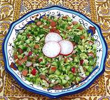

|
Turkmen Summer SaladTurkmenistan | ||||
| Makes: Effort: Sched: DoAhead: |
2 # ** 1-1/2 hrs Yes |
This simple chopped salad incorporates several summer vegetables and herbs. It's similar to a Turkish Spoon Salad, though ingredients can vary a lot in both countries. See Note-5 for method. | |||
|
|
------ 6-1/2 7 5 9 6 3 1 2 2 ------ 1 1/3 1/2 ------ 2 1 1 |
--- oz oz oz oz cl T T --- t t t --- T T T |
-- Vegetables / Herbs Cabbage, white Tomato Mild Chilis (1) Cucumbers (2) Radishes Scallions Garlic Dill, fresh Parsley, flat -- Seasonings Salt Pepper Chili Flake (3) -- Dressing Oil (4) Lemon Juice Vinegar, wine |
Two Pounds should give you at least 6 salad size servings. Make - (1-1/2 hrs - 20 min work)
|